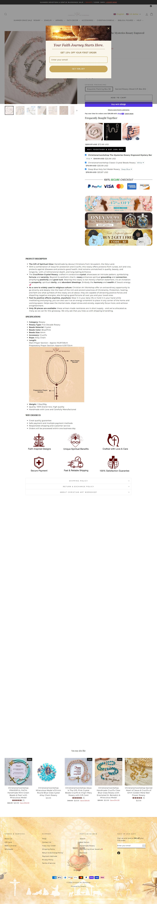

Fonte: coleção de best sellers.
Mediana do catálogo: $34.99 · faixa $9.99 a $69.99
| # | Produto | Preço |
|---|---|---|
| 1 | Christianartworkshop The Mysteries Rosary Engraved Mystery B | $25.99 |
| 2 | Christianartworkshop Classic Style St. Michael the Archangel | $26.99 |
| 3 | Christianartworkshop Modern Style Crafted Red Gemstones Sacr | $24.99 |
| 4 | Christianartworkshop Classic Style Saint George and the Drag | $25.99 |
| 5 | Christianartworkshop Saint Jude Thaddeus & Crucifix of 8 mm | $26.99 |
| 6 | Christianartworkshop Olive Wood Beads Fifteen Decade Praying | $69.99 |
| 7 | Christianartworkshop St. Benedict the Protector Titanium Rin | $25.99 |
| 8 | Christianartworkshop St. Benedict Symbol Crucifix Necklace | $26.99 |
| Criativos únicos (amostra de 50 mais recentes) | 14 |
| Fator de duplicação | 3.6x (mesmo criativo repetido) |
| Anúncios por dia | rajada, amostra criada em ~9h |
| Criativos únicos por semana | — |
| Janela da amostra | 0.38 dias |
Origem do tráfego: United States 65.86%, Australia 7.36%, Canada 3.81%, Germany 3.49%, United Kingdom 3.38%. Demografia: faixa 25 - 34.
| Headline |
|---|
| "✝️FREE TODAY✝️ --- Christian Handmade Jewelry" |
| "✝️FREE TODAY ONLY✝️" |
| "🎁 A Meaningful Gift Of Faith | Limited Offer" |
| "ENJOY 15/20/25%OFF EVERYTHING" |
Contagem tirada do JSON-LD da própria loja (widget loox), não de terceiro. Amostra dos produtos, é piso e não o total.
| Produto amostrado | Reviews | Nota |
|---|---|---|
| crucifixion-crystal-rosary | 38 | 5.0 |
| classic-style-st-michael-the-archangel-prote | 7 | 5.0 |
| christian-art-modern-style-crafted-red-gemst | 20 | 4.9 |
| christianartworkshop-classic-style-saint-geo | 2 | 4.5 |
Transparência sobre os limites desta ficha. Cada linha mostra o que faltou, por quê, e o que foi tentado.
| Dado | Motivo | Método tentado |
|---|---|---|
| Pixel ID da Meta | não encontrado no HTML da home | Regex no HTML. O pixel é carregado via GTM ou via Customer Events do Shopify, que não expõe o ID no fonte. |
| Eixo | Pontos | Por quê |
|---|---|---|
| Sourcing simples | 1/2 | catálogo de 250 SKUs exige curadoria |
| Ticket fecha sem escada | 1/2 | modelo "grátis + frete" depende de upsell |
| Criativo simples de produzir | 2/2 | estático/imagem simples |
| Mecanismo com urgência | 1/2 | fé genérica, urgência do "FREE TODAY" |
| Investimento de entrada baixo | 2/2 | ticket baixo, entrada barata |
| Sem dependência de autoridade | 2/2 | vende no benefício, sem marca |
Nível é etiqueta de "pra quem serve", não nota de corte: 10-12 iniciante, 6-9 médio, 0-5 avançado. Toda oportunidade de dropshipping vale, muda só o perfil de operador.
Lider absoluto e o unico com trafego alto e mensuravel: 539,9 mil visitas/mes e rank de categoria 300 no SimilarWeb, com o rank global subindo de 84 mil para 66 mil em 3 meses. Roda a oferta mais agressiva possivel (produto GRATIS como isca de entrada) e um ritmo de teste em rajada: subiu 50 anuncios em cerca de 9 horas na amostra. Catalogo largo (250 produtos, teto do endpoint) cobrindo joia, rosario, decoracao e vestuario. Cluster confirmado: opera tambem em christiandiscipleshop.com.